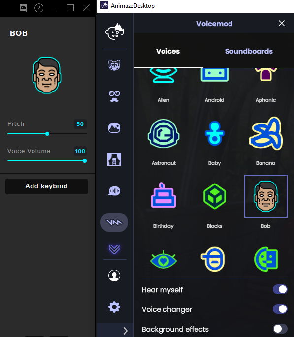
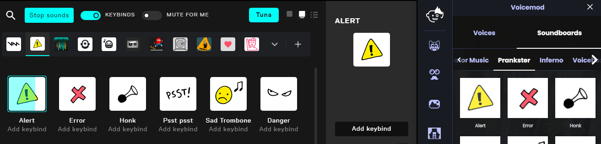
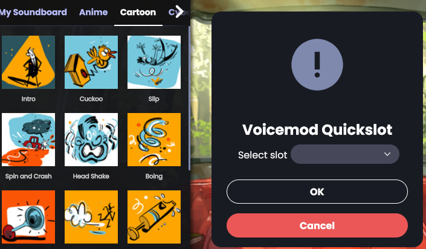
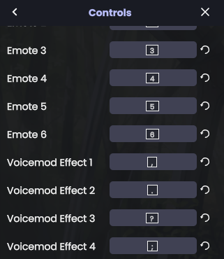
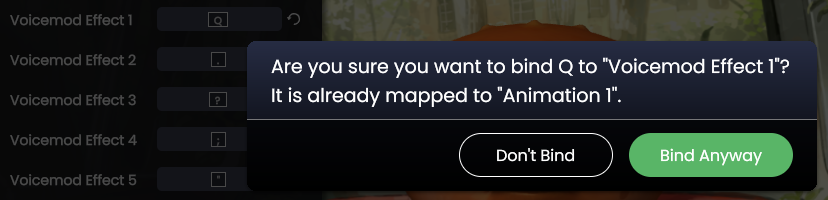
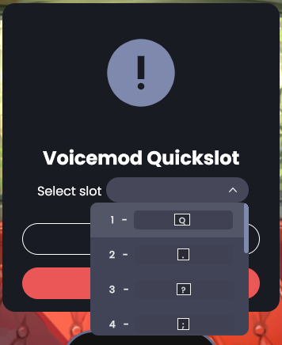
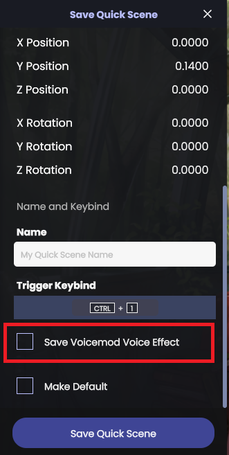

Leveraging Voicemod controls in Animaze
Voicemod is the best free voice-changing software for gamers, content creators, and Vtubers. It allows you easily change your voice to have it sound like a robot, demon, chipmunk, woman, man, or anything else you can imagine. The technology synergizes perfectly with Animaze, giving your digital character more depth, by complementing your visual persona with the matching voice it was missing.
Animaze has added Voicemod controls allowing you to change Voicemod voice effects and play sound memes directly within the app, pairing them with triggering special actions, special poses, idle animations, emotes, and even quick scenes. You still need the Voicemod app to be up and running.
Basic Usage
The first step is to have the Voicemod app up and running. If you haven’t got it installed you can get it from Voicemod's official website.
Once you the Voicemod app is working properly, move on to open Animaze.
Head on to the left-side Animaze menu to locate and click the Voicemod icon. This will open up an Animaze drawer with two main tabs: Voices and Soundboards, mirroring all options you have available in Voicemod.
In the Voices tab click on a Voice Effect and notice that it selected that particular item in the Voicemod app

The same goes for the Soundboards tab, click on a sound item.

Animaze also supports 10 Voicemod quick slots that are keybinding. You can assign a voice effect or a sound bite to a quick slot by holding Ctrl+Shift and clicking on the item. This action will prompt you with a Voicemod slot selection.

Tips & Tricks
Trigger a Voicemod Sound bite and a Special Action at the same time
Change a Voicemod quick slot keybind to match a Special Action keybind by going to Settings > Controls and scroll down to Voicemod Effect #

Change the Voicemod Effect 1 keybind to Q. This will prompt a warning that it’s already used by a Special Action slot. Click Bind Anyway.

Open the Voicemod drawer and assign a sound bite to the first Voicemod Effect quick slot.

Now, when you trigger the Special Action on the Q keybind it will also trigger the Voicemod sound bite.
This method also works for Animaze Emotes, just use the appropriate keybinds.
Save a Voicemod Voice Effect to a Quickscene
Animaze can only saves the Voicemod Voice Effect in a Quickscene, so you’ll have to have the effect selected before saving a Quickscene.
When saving a Quickscene, the Voicemod effect isn’t saved by default, you have to scroll down in the Save menu and locate the Save Voicemod Voice Effect and check it

Next time you load the Quickscene you’ll also change the Voicemod Voice Effect.